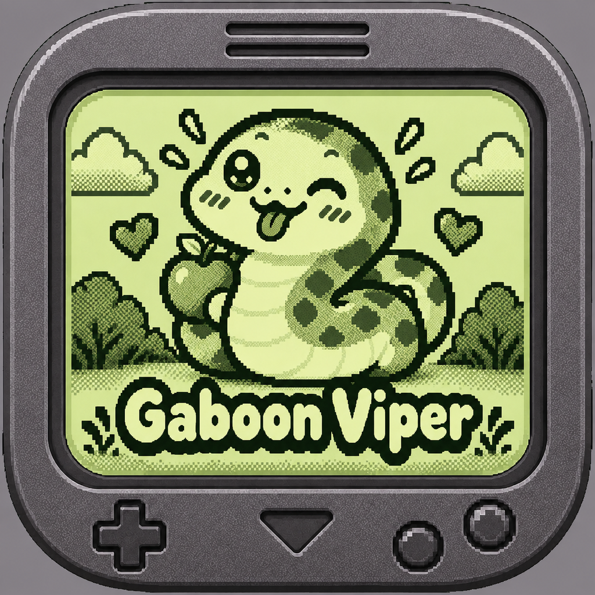
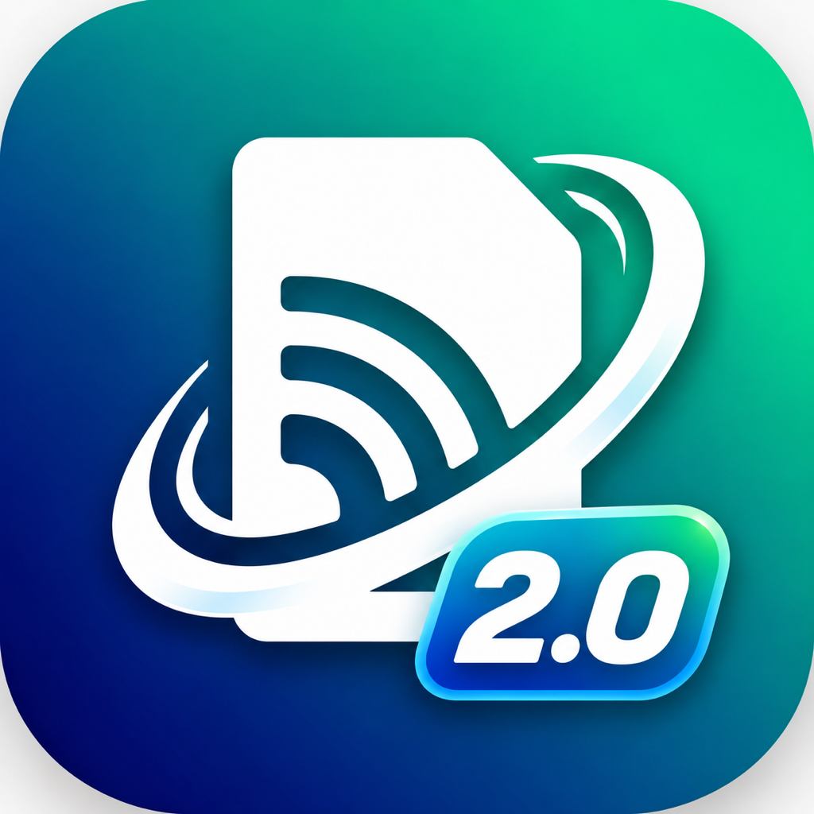
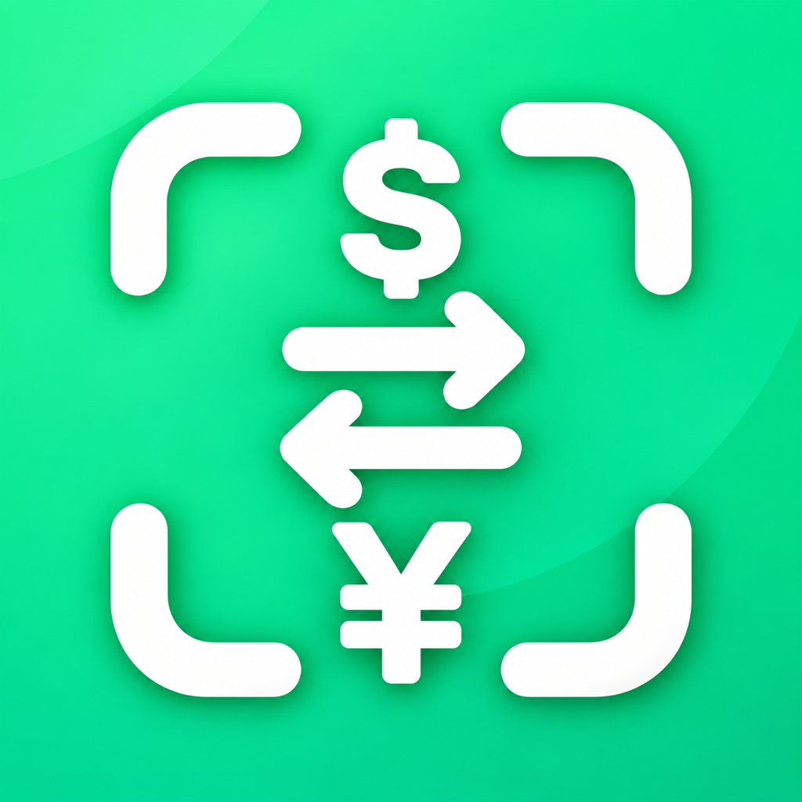

🍾 射擊
打碎酒保丟出的盤子、酒瓶、酒杯。同一槍打中 1／2／3 個，各得 10／50／150 分。
荒野大對決是一款致敬 80 年代液晶掌機的西部酒館射擊遊戲。左右移動、往上開槍，打碎酒保丟出的盤子、酒瓶和酒杯；閃過客人砸來的蘋果與煙灰缸；還得把威士忌倒在腳邊的炸藥上——最後，跟推門進來的亡命之徒一決勝負。
iPhone · iOS 17 以上 · 橫向遊玩 · 繁體中文／English
遊戲畫面


怎麼玩
警長只有四個站位，開槍是垂直往上一整欄。看準酒保出手的節奏移位，同時留意兩位客人什麼時候站起來。
打碎酒保丟出的盤子、酒瓶、酒杯。同一槍打中 1／2／3 個，各得 10／50／150 分。
大叔的煙灰缸砸左邊兩格、女士的蘋果砸右邊兩格。看到客人起身就準備移位。
第 2 種模式起炸藥飛過，打到算失誤；第 3 種模式要走到最右邊，再按一下右鍵倒酒澆熄引信。
亡命之徒會假動作。翻倒的桌子只擋得住 3 槍，每中一槍掉一片；擊中他 3 次就過關。
關卡與計分
關卡越高，東西滑過來的速度越快、同時丟出的數量越多。第 10 關打完回到第 6 關繼續挑戰。同一個模式失誤 3 次就 GAME OVER。
| 關卡 | 1 個 | 一槍 2 個 | 一槍 3 個 | 獎勵酒瓶 | 決鬥 | 無失誤 |
|---|---|---|---|---|---|---|
| 1–2 | 10 | 50 | 150 | 90 | 50 | 200 |
| 3–4 | 10 | 50 | 150 | 140 | 50 | 250 |
| 5–6 | 10 | 50 | 150 | 190 | 50 | 300 |
| 7–8 | 10 | 50 | 150 | 190 | 50 | 350 |
| 9–10 | 10 | 50 | 150 | 190 | 50 | 400 |
排行榜
登入 Game Center 後，每局 GAME OVER 會自動上傳分數；按機身下方的 RANK 看全球排名。沒登入也能完整遊玩。
掌機手感
角色不是滑來滑去，而是固定位置的段位輪流點亮；全部音效都是即時合成的方波與雜訊，搭配震動回饋。手機切到靜音也會出聲，按機身上的 ♪ 鍵可以關掉。
操作
觸控用機身上的 FIRE 鈕與左右搖桿；也支援藍牙鍵盤（← → 移動、空白鍵開槍）與 MFi／Xbox／PlayStation 手把。
收費與隱私
荒野大對決不含廣告、不追蹤使用者、不需要帳號，也沒有應用程式內購買。最高分與設定只存在裝置本機。

像素掌機風格的成長制動作遊戲，食物會先在體內消化，胃容量與道具決定每一口的風險。

出發前設定、安裝確認、效期與流量估算集中整理。
把紙本名片整理成可搜尋、可編輯、可私密保存的聯絡資料。

掃描菜單、價牌與看板，查看翻譯和參考價格。
🔊 iPhone 1.3 新功能：台語念給我聽
為台灣長輩與家人設計的血壓紀錄、吃藥提醒與健保慢箋領藥 App。看字吃力就按「念給我聽」，手機用國語或台語念給你聽。